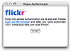
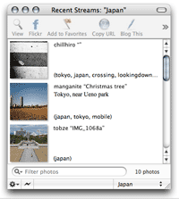
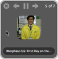
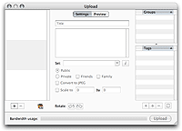

Setup
Simply download and unpack 1001.zip and launch the application.

1001 will ask you to authenticate with Flickr. Click on "login via the browser".
Your webrowser will load the Flickr "Success!" screen.
Return to the 1001 Authentication window and click "Finish".
Once that's done it runs a default stream.
You can configure streams via Streams→Edit Streams…
or you can just use it to upload images to Flickr.
Streams

The idea behind the streams is that 1001 periodically checks Flickr for any new photos (either from your contacts,
groups or from everyone, or those that match the tags that you specify). Since it polls periodically,
keep the number of photos to retrieve low (the default value is good). Set the update interval to 5 minutes
if you want to check more often, but 15 minutes is fine. The history limit is for how many items are being
kept around in the recent streams window.
In the recent streams list, you can select an item and choose to:
- view the original page on Flickr or copy the url
- view the large image inline in 1001
- blog the current image using ecto or whatever blog client you prefer
- set the selected image as your desktop background

Running in the background, when new photos appear on Flickr, 1001 will notify you with a nice notification window.
This allows you to quickly see what's new. Click on the notification preview image to view the original sized
version or command-click to go directly to the corresponding Flickr webpage.
Upload pictures to Flickr
To upload, either drop images on the 1001 icon in Finder or Dock, or open
Image→Upload…, add images there (with iPhoto import!)
or drop images in the image drawer. Note that the tags list is initially empty,
but can be filled up with your existing online tags using the sync button.
Images you upload can be tagged, resized, rotated, assigned to sets and/or groups and you can also control who sees them, from Public, to only Friends and / or Family.